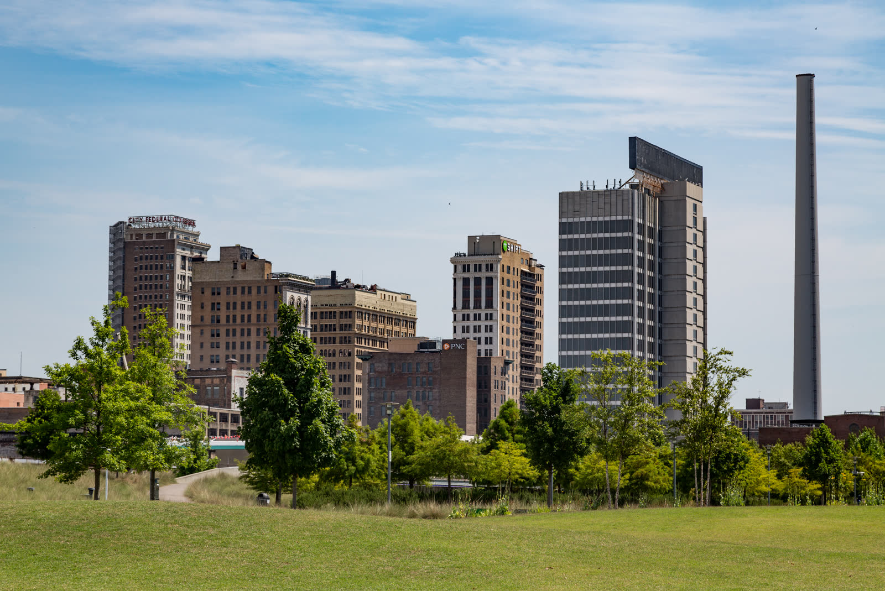

Birmingham, Alabama
Birthplace of the PCA with Deep Reformed Roots and Affordable Southern Living

Key Stats
Overview
Birmingham's Over the Mountain suburbs offer a compelling combination of affordability, strong schools, and one of the deepest Reformed Christian communities in the South. As the birthplace of the PCA (Briarwood hosted the first General Assembly in 1973), Birmingham holds unique historical significance. Briarwood PCA anchors a network of 14+ Reformed congregations. Westminster School at Oak Mountain (ACCS, avg ACT 30) and Evangel Classical (ACCS) provide strong classical options, complemented by Briarwood Christian School (1,850 students).
The lifestyle centers on the 9,940-acre Oak Mountain State Park with 100+ miles of hiking trails, 25 miles of equestrian trails, and nationally recognized mountain biking. Shelby County's rural reaches provide horse property with agricultural zoning at reasonable prices. The cost of living runs 10% below national average with property taxes among the nation's lowest. Summer heat and humidity are the primary trade-off, but mild winters allow year-round outdoor activity.
Scores
Weighted overall: 8.0 -- ranked approximately #3 of 12 cities evaluated
Cost of Living
Score: 8 -- 10% below national average with low property taxes
| Metric | Value | Notes |
|---|---|---|
| Overall Index | 90 | 10% below national average (100) |
| Housing Index | Below Avg | Affordable relative to metro size |
| Grocery Index | ~95 | Slightly below national average |
| Utilities Index | ~100 | Near national average (summer AC costs higher) |
| State Income Tax | 2-5% | Alabama graduated income tax |
| Sales Tax | ~9-10% | State 4% + county/city; varies by municipality |
| Property Tax (Effective) | ~0.40% | Among the lowest in the nation; homestead exemption available |
| Median Household Income | $93,543 | Shelby County suburbs; city-proper is lower |
| Unemployment | ~3% | Healthy labor market |
| Remote Friendliness | Good | AT&T Fiber and Google Fiber expanding in suburbs |
Top industries: Healthcare (UAB -- state's largest employer), Finance & Banking, Automotive (Mercedes, Honda nearby), Engineering, Insurance
Housing & Land
Score: 7 -- Median $475K in target suburbs with acreage options in Shelby County
Neighborhoods
| Neighborhood | Price Range | Family Rating | Notes |
|---|---|---|---|
| Vestavia Hills | $350K-$900K+ | Excellent | Top-rated schools, close to Briarwood PCA, established family community |
| Hoover / Bluff Park | $300K-$700K | Excellent | Largest Over the Mountain suburb, Spain Park HS, retail hub |
| Oak Mountain / Chelsea | $350K-$800K | Excellent | Near Westminster at Oak Mountain, adjacent to state park, newer construction |
| Homewood | $400K-$1M+ | Excellent | Walkable downtown, charming character, top public schools |
| Rural Shelby County | $250K-$600K | Good | Best value for acreage and horse property with agricultural zoning |
Horse-friendly zoning available in rural Shelby County. Agricultural zoning at reasonable prices.
Education
Score: 8 -- Two ACCS classical schools plus Briarwood Christian School (1,850 students)
Classical Christian Schools
| School | Grades | Tuition | Details |
|---|---|---|---|
| Westminster School at Oak Mountain | K-12 | -- | ACCS member. Average ACT score of 30. Strong classical curriculum with rigorous academics. |
| Evangel Classical School | K-12 | -- | ACCS member. Classical Christian education in the Birmingham metro area. |
Other Notable Christian Schools
| School | Grades | Tuition | Details |
|---|---|---|---|
| Briarwood Christian School | K-12 | -- | 1,850 students. Operated by Briarwood PCA. One of the largest church-run schools in the PCA. Strong academics and athletics. |
Homeschool Co-ops & Communities
| Organization | Type | Notes |
|---|---|---|
| Classical Conversations | Classical Christian | Multiple communities across the Birmingham metro |
| Birmingham Area Homeschool Groups | Support | Active Christian homeschool community in Shelby County suburbs |
Public school rating: Shelby County schools are well-regarded, with Vestavia Hills and Hoover among Alabama's top districts.
Faith Community
Score: 9 -- Birthplace of the PCA with 14 Reformed churches anchored by Briarwood (4,000 members)
PCA Churches
| Church | Size | Notes |
|---|---|---|
| Briarwood Presbyterian Church | 4,000 members | Hosted the first PCA General Assembly in 1973. Operates Briarwood Christian School (1,850 students). One of the largest PCA congregations in the country. |
| Independent Presbyterian | Large | Historic downtown Birmingham church with strong Reformed teaching |
| Covenant Presbyterian | Medium | PCA church serving the Birmingham metro |
| Redeemer Community Church | Medium | PCA church with emphasis on community engagement |
| Valley Presbyterian | Small-Medium | PCA church in the Over the Mountain area |
| Oak Mountain Presbyterian | Small-Medium | PCA church near Oak Mountain State Park |
| Cahaba Park Church | Small-Medium | PCA church plant in the Shelby County area |
Other Reformed & Presbyterian Churches
| Church | Denomination | Size | Notes |
|---|---|---|---|
| Church of the Good Shepherd | OPC | Small | OPC presence in the Birmingham metro |
| Birmingham OPC | OPC | Small | Second OPC congregation serving the area |
| Christ Church Birmingham | EPC | Medium | Evangelical Presbyterian Church |
| Trinity Church Birmingham | CREC | Small | CREC congregation with classical education emphasis |
| Christ Covenant Church | CREC | Small | Second CREC congregation in metro area |
| Birmingham Reformed Presbyterian | RPCNA | Small | Reformed Presbyterian Church of North America |
Christian organizations: Briarwood PCA campus ministries, Birmingham Theological Seminary, multiple PCA-aligned ministries and mission organizations.
Lifestyle & Outdoors
Score: 7 -- Oak Mountain State Park (9,940 acres) with 100+ miles of trails and nationally recognized mountain biking
Climate
| Season | High | Low |
|---|---|---|
| Spring | 74F | 50F |
| Summer | 92F | 71F |
| Fall | 73F | 50F |
| Winter | 53F | 33F |
Outdoor Recreation
| Activity | Quality | Details |
|---|---|---|
| Hiking | 5/5 | Oak Mountain State Park 100+ miles of trails, Ruffner Mountain, Red Mountain Park |
| Mountain Biking | 5/5 | Nationally recognized trails at Oak Mountain; IMBA-rated trail systems |
| Equestrian | 5/5 | 25 miles of equestrian trails at Oak Mountain, Shelby County horse property with agricultural zoning |
| Water Sports | 3/5 | Oak Mountain lakes, Lake Purdy, Lay Lake, Smith Lake (1 hr north) |
| Cycling | 4/5 | Expanding greenway system, strong road cycling community in suburbs |
Birmingham city-proper has elevated crime rates, but the Over the Mountain suburbs (Vestavia Hills, Hoover, Homewood, Oak Mountain) have dramatically lower crime and are where the target family communities are located. The lifestyle score reflects the excellent outdoor recreation at Oak Mountain State Park and mild winters, tempered by hot, humid summers.
Cultural amenities: Birmingham Museum of Art, Vulcan Park, Railroad Park, Regions Field, vibrant food scene (James Beard Award-winning restaurants).
Community
Score: 8 -- Over the Mountain suburbs are deeply family-oriented with strong church-driven community
| Attribute | Rating |
|---|---|
| Family Friendliness | Excellent |
| Homeschool Community | Strong |
| Conservative Presence | Very Strong |
| Small Town Feel | Moderate |
Birmingham's Over the Mountain suburbs -- Vestavia Hills, Hoover, Homewood, and the Oak Mountain corridor -- provide a family-oriented lifestyle with excellent schools and strong church communities. Briarwood PCA's 4,000-member congregation creates a self-reinforcing community network through its school, ministries, and small groups. The broader metro offers big-city amenities (UAB medical center, professional sports, dining) while suburbs retain a close-knit, church-driven neighborhood feel.
Pros and Cons
Advantages
- Birthplace of the PCA -- Briarwood hosted first General Assembly in 1973
- Briarwood PCA (4,000 members) anchors an exceptional Reformed community with 14 churches
- Two ACCS classical Christian schools plus Briarwood Christian School (1,850 students)
- Cost of living 10% below national average with property taxes among nation's lowest (~0.40%)
- Oak Mountain State Park: 9,940 acres with 100+ miles hiking, 25 miles equestrian trails
- Nationally recognized mountain biking
- Horse property available in rural Shelby County with agricultural zoning
- Mild winters allow year-round outdoor activity
- UAB is a top-tier medical center and the state's largest employer
Considerations
- Hot, humid summers with highs reaching 92F -- the primary trade-off
- Alabama has a 2-5% state income tax (unlike Tennessee's 0%)
- Combined sales tax rates of 9-10% depending on municipality
- City-proper crime rates are among the highest in the nation -- suburbs are significantly safer
- Car-dependent (walk score ~35) -- no walkable urban core in suburbs
- 54 inches of annual rainfall
- Target suburban home prices ($475K median) higher than Birmingham city-proper
- Less diverse Reformed ecosystem than Chattanooga (more concentrated around Briarwood)